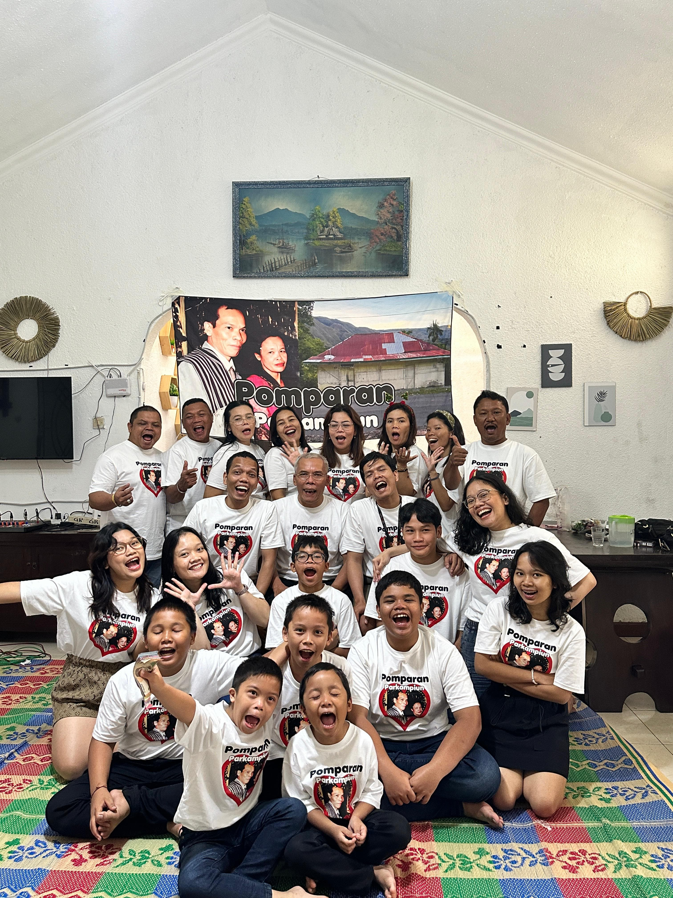
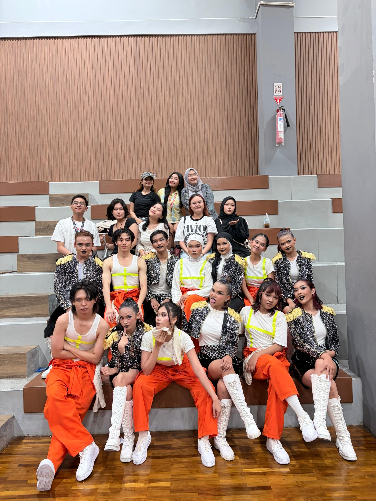
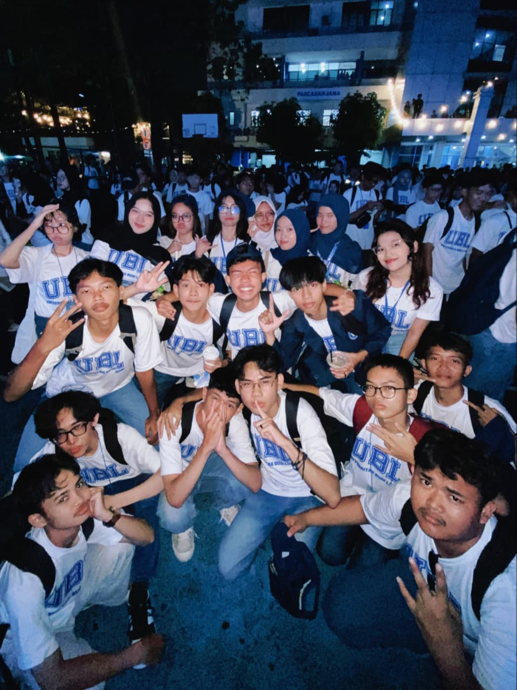
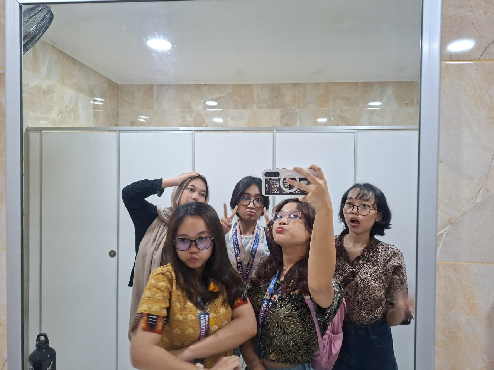
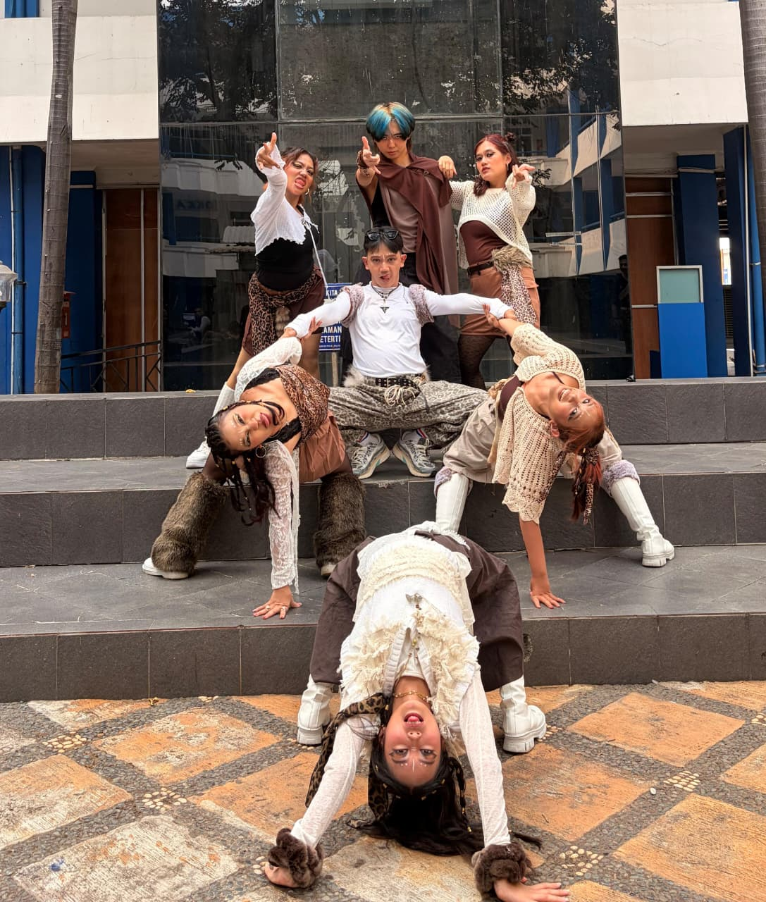
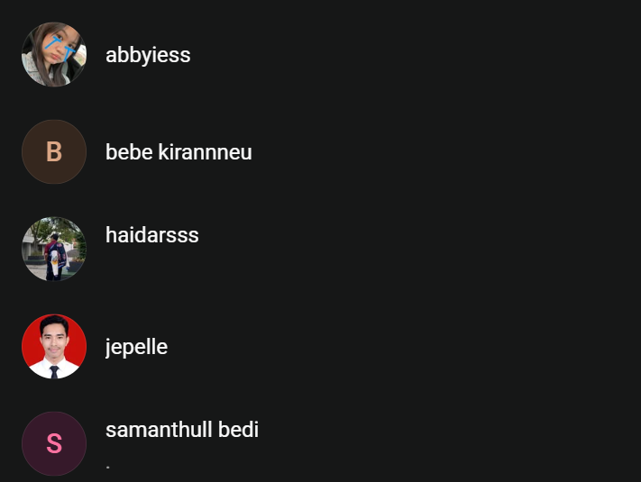

MEMORY I
My Fam(ily)
My fam, my home, my people.
♡ THE PEOPLE BEHIND MY JOURNEY ♡
Di balik setiap langkah dan pencapaian, selalu ada orang-orang hebat yang memberikan dukungan, semangat, doa, dan inspirasi. Halaman ini aku persembahkan untuk mereka yang berarti dalam hidupku.
Aku percaya bahwa perjalanan tidak harus dilalui sendirian. Keluarga, sahabat, guru, dan orang-orang terdekat telah menjadi bagian penting dalam prosesku untuk terus belajar, berkembang, dan menjadi versi terbaik dari diriku.
Terima kasih sudah hadir, mendukung, dan percaya kepadaku, bahkan ketika perjalanan terasa sulit.
Good people
make great
journeys
✧ PRECIOUS MEMORIES ✧
Enam ruang untuk menyimpan foto dan kenangan berharga.

My fam, my home, my people.

Dance, friends, and lots of good memories.

Just good times with good people.

A bond that just feels right.

Random moments, core memories.

My people, my kind of vibe.